Сакура Суши Студия была основана в 2010 году группой молодых предпринимателей, увлеченных японской кухней и культурой. С тех пор они стали одним из лидеров на рынке суши в своем регионе, завоевав популярность благодаря высокому качеству продукции и оригинальному подходу к приготовлению блюд. Сакура Суши Студия специализируется на производстве и доставке свежих и вкусных суши, роллов, сашими и других японских блюд. Они используют только свежие ингредиенты высочайшего качества, чтобы обеспечить клиентам неповторимый вкус и удовольствие от каждого укуса. Расположенная в центре города, Сакура Суши Студия предлагает уютную атмосферу ресторана, а также услугу доставки на дом или в офис. Команда опытных поваров и су-шефов всегда готова порадовать гостей своими кулинарными шедеврами и удивить новыми авторскими блюдами. Благодаря своему профессионализму, творческому подходу и любви к японской кухне, Сакура Суши Студия завоевала сердца многих гурманов и стала неотъемлемой частью гастрономической жизни города.
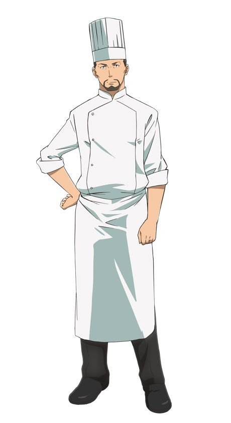
Хироши Такахаси
Мастер суши с 20-летним опытом работы. Он учился в традиционной школе суши в Токио и успешно окончил программу мастера суши. Его специальность - создание уникальных роллов и использование свежих ингредиентов.
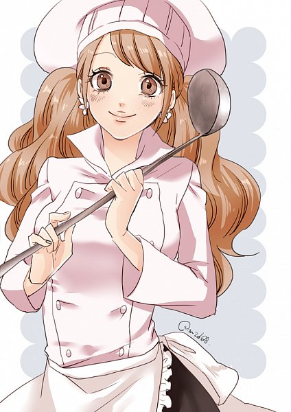
Миюки Сато
Известная суши мастерица, обучавшаяся в престижной школе суши в Нагои. Она имеет большой опыт работы в ресторанах и известна своими оригинальными рецептами.
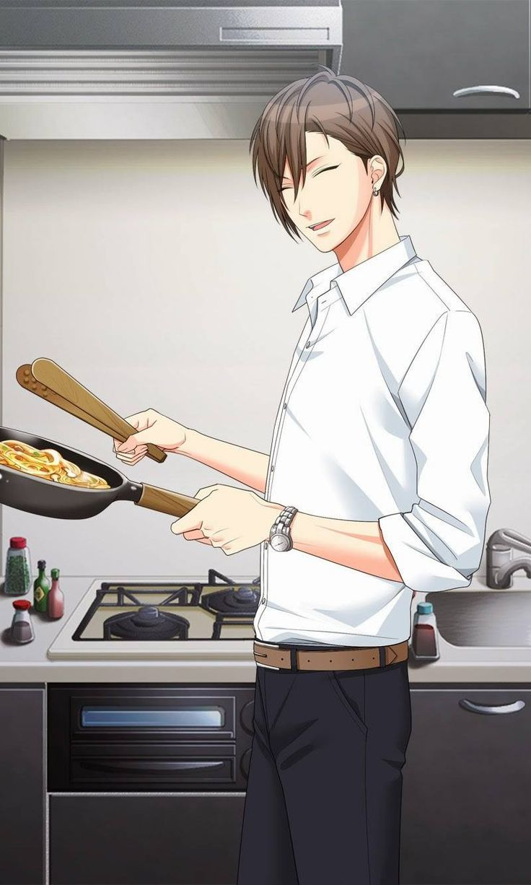
Кендзо Ямамото
Молодой и талантливый суши мастер, который обучался в известной школе суши в Осаке. Он известен своими навыками в резке рыбы и умением сочетать различные вкусы в своих блюдах.
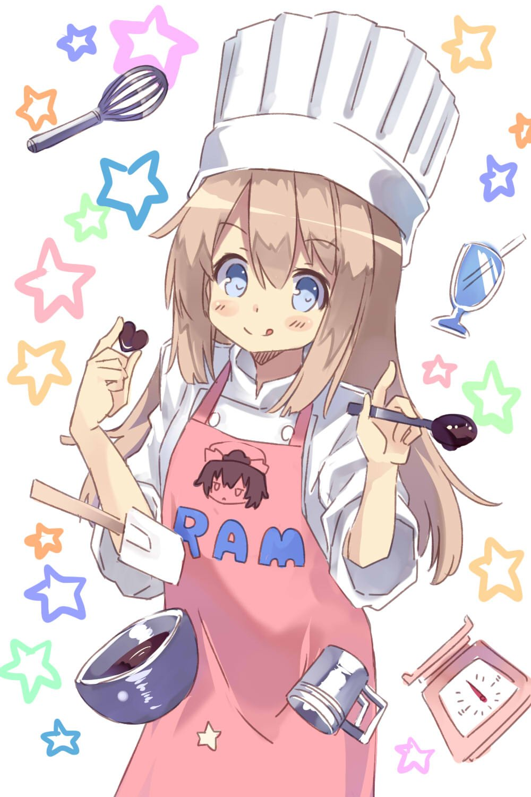
Хана Ито
Молодая и талантливая суши мастерица, которая училась у опытного шеф-повара в Киото. Она специализируется на создании изысканных роллов и умело сочетает различные вкусы.
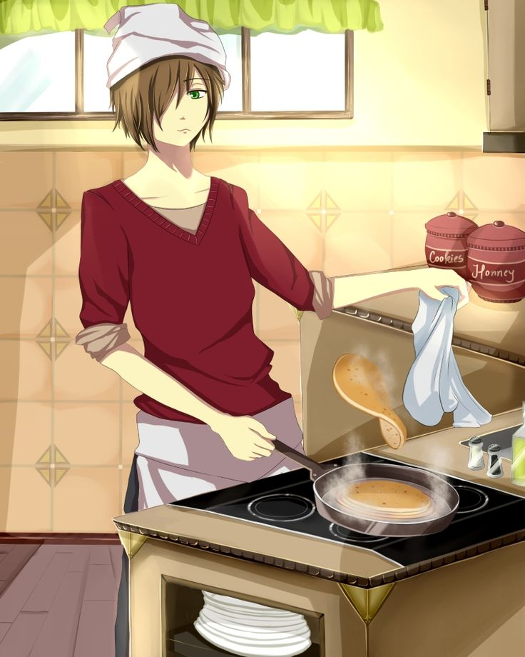
Такуми Накамура
Эксперт в приготовлении традиционных японских суши. Он прошел обучение у известного шеф-повара в Киото и получил сертификат мастера суши. Его особенность - внимание к деталям и стремление к совершенству.
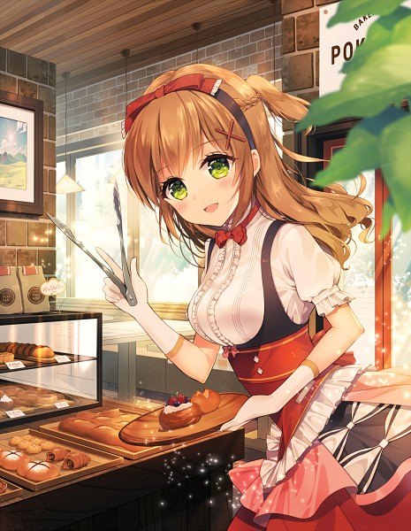
Аяка Миямото
Профессиональная суши мастерица с многолетним опытом работы. Она обучалась в традиционной школе суши в Токио и имеет сертификат мастера суши. Ее блюда отличаются изысканным вкусом и красивым оформлением
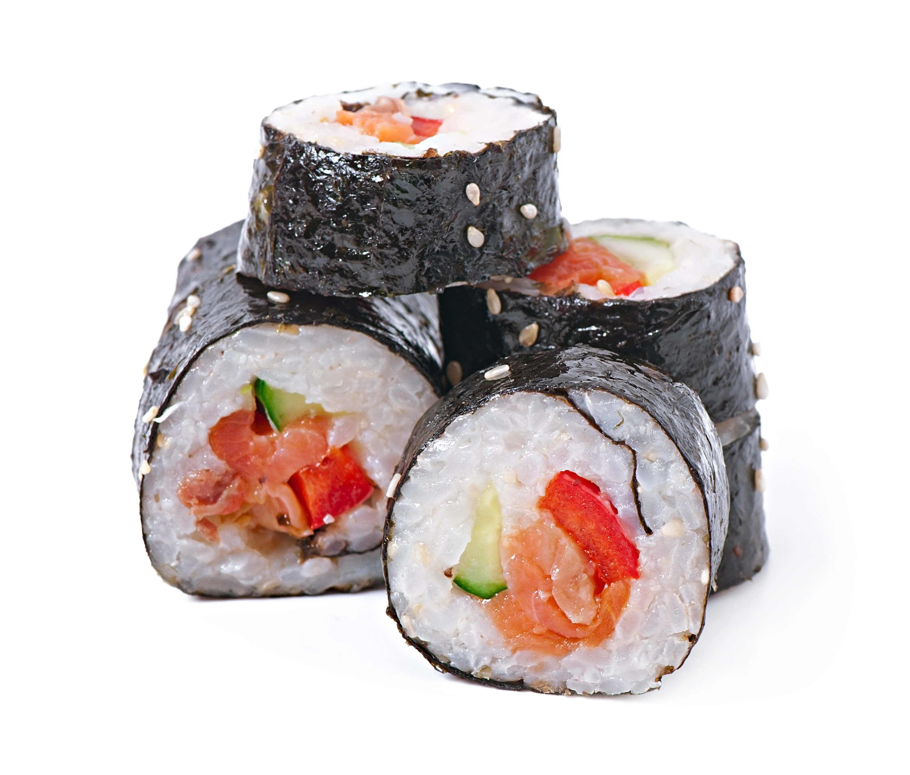 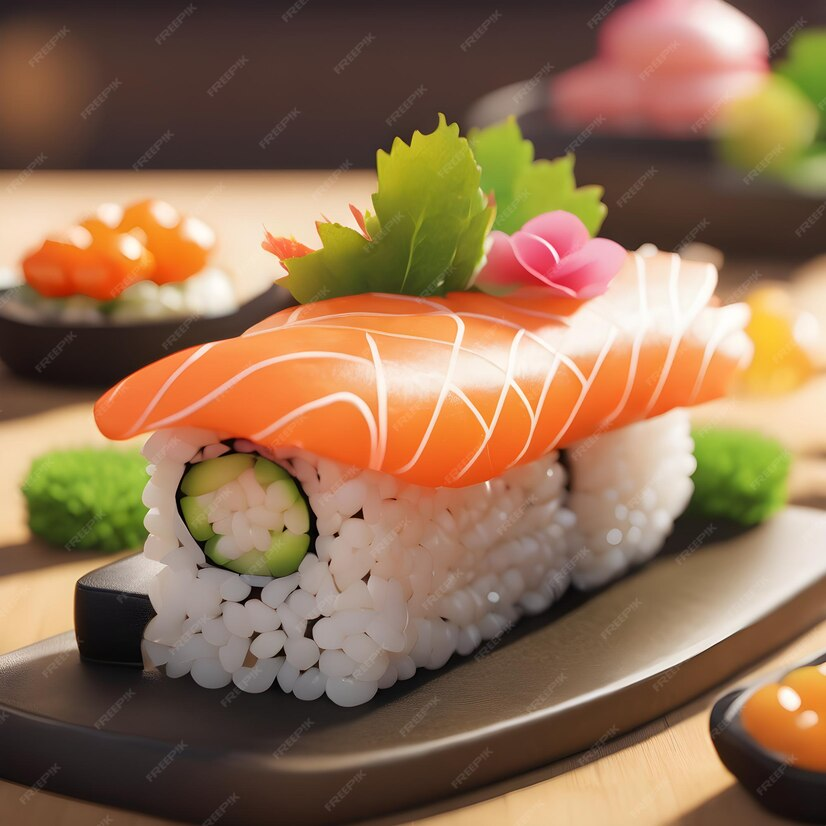 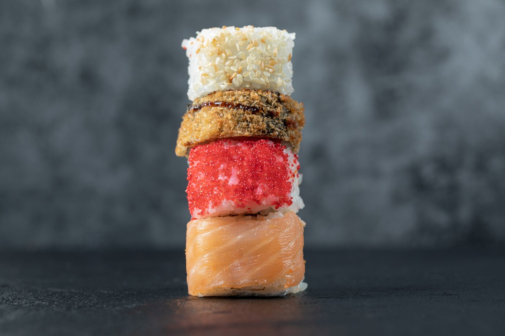
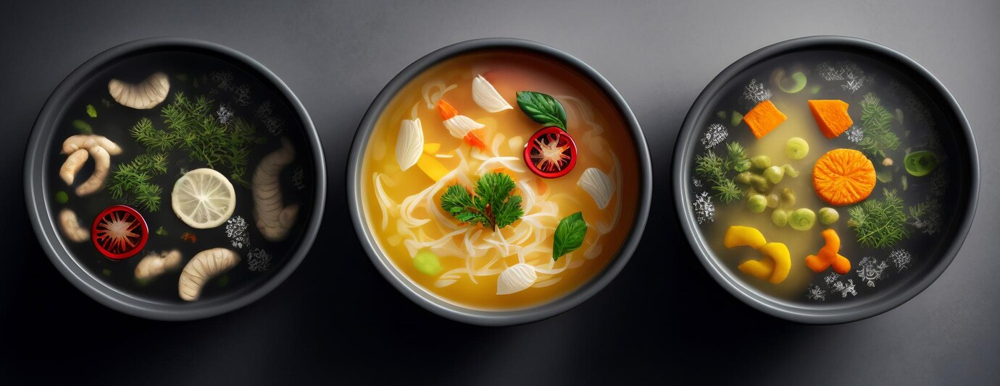 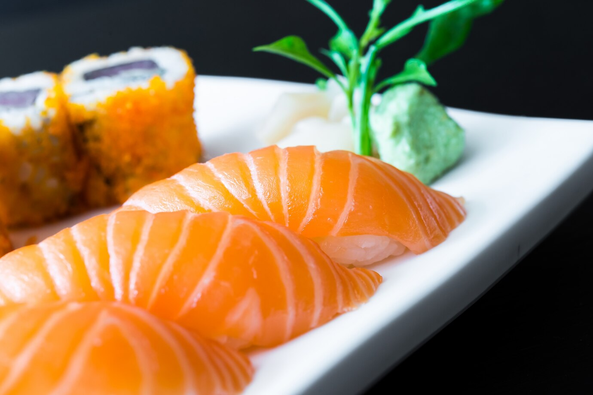
Назад к оглавлению